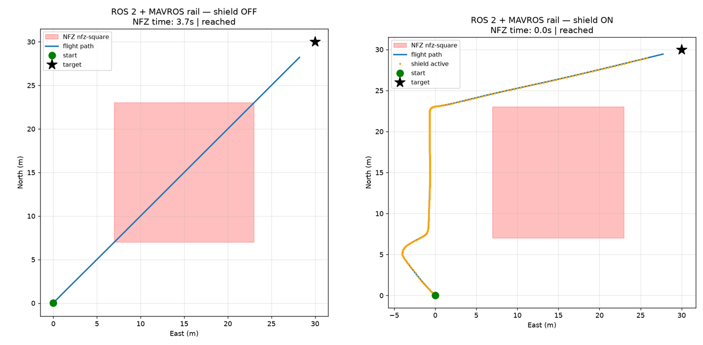
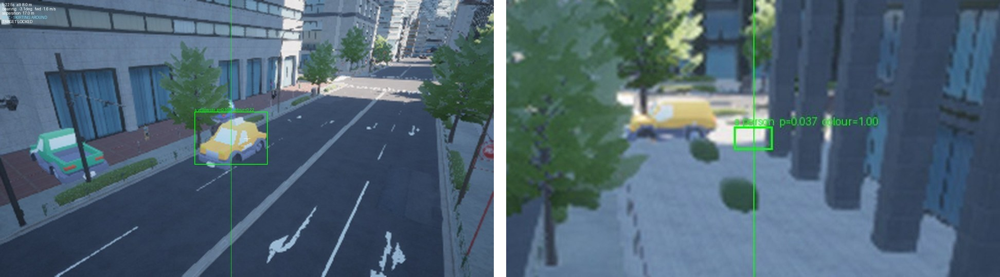
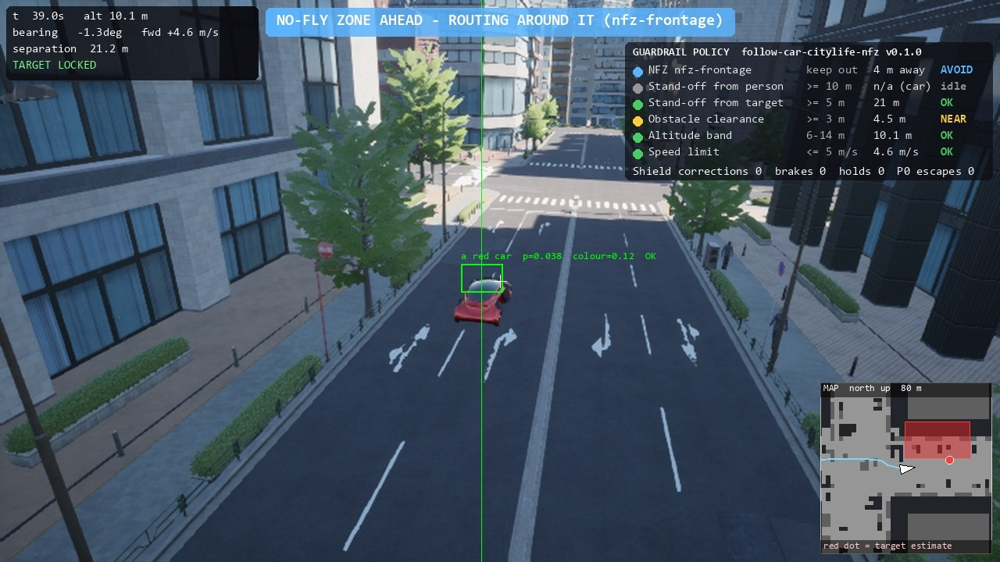

WP3 · 工作項目
Suffix Safety Shield
WP3 交付位於 VLA 與 MAVROS 2 之間的 ROS 2 節點：檢查每個指令，若會違規就修正。在計畫書的設計中，修正不安全時還會升級為 Brake、Loiter、RTL 或 Land，並以 ArduPilot 本身的 GeoFence 作為最後一道防線。
計畫書的要求
“The Shield is the last software layer before the autopilot.”計畫書 Safety Shield 頁面
主要檔案：guardrail/shield.py guardrail/ir.py guardrail/fsm.py sitl/ros2_shield_node.py demo/policy_hud.py
已完成
檢查每一道指令的 Shield
每個 tick，Shield 都會預測指令會把無人機帶到哪裡，依所有生效的規則檢查，用小型修正運算子（速度、爬升與偏航限制、高度修正、淨空修正、安全距離恢復、走廊返回、禁航區邊緣滑行）修正，再檢查一次結果；若沒有乾淨的修正，就煞停。
guardrail/shield.py位於 MAVROS 2 前方的 ROS 2 節點
Shield 以 ROS 2 節點的形式位於駕駛與 MAVROS 2 之間，因此 ArduPilot 只會收到檢查過的指令。
sitl/ros2_shield_node.py編譯後的禁航區索引
每個禁航區的緩衝邊界只建立一次並建立索引（STRtree），因此 Shield 只檢查預測軌跡可能碰到的禁航區；它也保留最近 50 個 tick 作為滑動視窗。
guardrail/ir.py升級狀態機
Normal → Brake → Loiter → RTL → Land，採用計畫書的預設值：5 s 內 3 次違規即升級、修正幅度大於 θ（水平 2.0 m、垂直 0.5 m）即升級、連續 2 s 沒有違規即回到 Normal。已做成模組並完成測試，附有 fail-safe 觸發正確性的評分器。
guardrail/fsm.py稽核日誌
Shield 發現或修正問題的每個 tick 都會寫入稽核日誌，內含規則檔雜湊值、原始與實際送出的指令，以及送出指令中殘留的違規。
guardrail/audit.py螢幕上的規則
疊在影片上的面板列出已載入規則檔的每條規則、其限制、即時數值與狀態；橫幅顯示最近 1.5 s 內最重要的事件，北方朝上的地圖顯示禁航區與飛行軌跡。
demo/policy_hud.py
已展示

在 ArduPilot SITL 上關閉與開啟 Shield
同一條航點任務，在一台桌機上以 ArduPilot SITL 搭配 MAVROS 2 執行（計畫書的 dev 拓撲），由刻意忽略規則的腳本測試駕駛飛行。Shield 關閉：在禁航區內 3.7 s。Shield 開啟：0.0 s；Shield 修正了指令，路徑繞過禁航區。
P0 逃逸率與對照飛行
在同一套 SITL 環境上的開發階段飛行（dev 拓撲，腳本測試駕駛）。開啟 Shield 時，每一次飛行的 P0 違規逃逸率都是 0.00；未開啟 Shield 的對照飛行為 0.6265（禁航區任務）與 0.6310（行人安全距離任務）。計畫書的 KPI 在 hil 拓撲（Jetson Orin）上量測。
重現方式：
python tools/kpi_report.py使用編譯後索引的禁航區檢查
以 50 條規則（其中 48 條為禁航區）、3 s 預測、每 0.5 s 一步，靠近禁航區時一次檢查需 0.13-0.26 ms，完整的 Shield 一步需 0.55-1.0 ms（皆為中位數）；加入索引前分別為 14-33 ms 與 172 ms。於開發用桌機量測。
重現方式：
python experiments/bench_shield_50rules.pyVLA 與 Shield 在同一個 tick 中運作
在一批 8 次的模擬飛行（每次 150 s）中，每一次開啟 Shield 的飛行都顯示：VLA（AerialVLA）決定航向，同時 Shield 在同一個控制 tick 中偏轉飛行軌跡。

安全距離隨目標類別改變
操作員在飛行中把描述從「a yellow car」改為「a person」時，目標類別變成行人，強制的安全距離從 5 m 變為 10 m，飛機、規則檔與雜湊值都不變。

城市中的螢幕規則顯示
一次 240 s 的紅車跟隨飛行，車輛行經的街道上設有禁航區：跟隨控制器讀取同一份規則檔並繞過禁航區，無人機從未進入，並在 98.5 % 的任務時間內與車保持 30 m 以內（同樣 10 m 巡航高度、沒有禁航區的飛行為 98.7 %；使用舊目標選擇的 7 次早期飛行為 8.8-43.6 %）。